SEBASTIAN STARKE, University of Edinburgh, UK and Electronic Arts, USA YIWEI ZHAO, Electronic Arts, USA
TAKU KOMURA, University of Edinburgh, UK
KAZI ZAMAN, Electronic Arts, USA

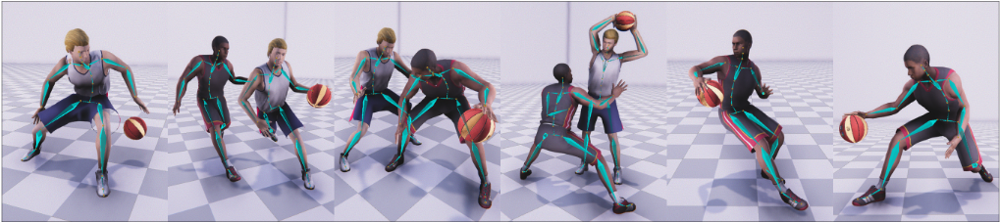
Training a bipedal character to play basketball and interact with objects, or a quadruped character to move in various locomotion modes, are difficult tasks due to the fast and complex contacts happening during the motion. In this paper, we propose a novel framework to learn fast and dynamic character interactions that involve multiple contacts between the body and an object, another character and the environment, from a rich, unstructured motion capture database. We use one-on-one basketball play and character interactions with the environment as examples. To achieve this task, we propose a novel feature called local motion phase, that can help neural networks to learn asynchronous movements of each bone and its interaction with external objects such as a ball or an environment. We also propose a novel generative scheme to reproduce a wide variation of movements from abstract control signals given by a gamepad, which can be useful for changing the style of the motion under the same context. Our scheme is useful for animating contact-rich, complex interactions for real-time applications such as computer games.
CCS Concepts: · Computing methodologies →Motion capture; Neural networks.
Additional Key Words and Phrases: neural networks, human motion, character animation, character control, character interactions, deep learning
Authors' addresses: Sebastian Starke, University of Edinburgh, 10 Crichton Street, Edinburgh, EH8 9AB, UK, sebastian.starke@ed.ac.uk, Electronic Arts, USA, sstarke@ ea.com; Yiwei Zhao, yiwzhao@ea.com, Electronic Arts, USA; Taku Komura, tkomura@ ed.ac.uk, University of Edinburgh, 10 Crichton Street, Edinburgh, EH8 9AB, UK; Kazi Zaman, kzaman@ea.com, Electronic Arts, USA.
Permission to make digital or hard copies of all or part of this work for personal or classroom use is granted without fee provided that copies are not made or distributed for profit or commercial advantage and that copies bear this notice and the full citation on the first page. Copyrights for components of this work owned by others than ACM must be honored. Abstracting with credit is permitted. To copy otherwise, or republish, to post on servers or to redistribute to lists, requires prior specific permission and/or a fee. Request permissions from permissions@acm.org.
© 2020 Association for Computing Machinery.
0730-0301/2020/7-ART1 $15.00
https://doi.org/10.1145/3386569.3392450
ACM Reference Format:
Sebastian Starke, Yiwei Zhao, Taku Komura, and Kazi Zaman. 2020. Local Motion Phases for Learning Multi-Contact Character Movements. ACM Trans. Graph. 39, 4, Article 1 (July 2020), 14 pages. https://doi.org/10.1145/ 3386569.3392450
1 INTRODUCTION
There is a huge demand in simulating fast and complex interactions that involve multiple contacts between a character and objects, an environment, and other characters, especially in computer games and films. For example, for basketball games, the players need to dribble the ball while making various movements with different foot-fall patterns to compete with the opponent characters.
Previous techniques to learn from unstructured motion capture database have limitations in terms of scalability, realism and variation in the movements. Firstly, most techniques require aligning the motions by a global temporal parameter such as the phase, which is often difficult when the motion involves multiple contacts that are asynchronous. Secondly, even when the motions are learned by the controller, there can be issues reproducing a wide variation of movements from low dimensional control signals such as those provided by the user through keyboards or gamepads.
In this paper, we propose a novel data-driven framework to learn fast and dynamic interactions that involve multiple contacts. We make use of a large database of one-on-one basketball play as our main example, where one player catches, dribbles and plays tricks with the ball, while avoiding the opponent player who tries to defend and intercept the ball. We design and train a neural character controller that can learn and produce realistic offense and defense actions under a unified framework, so that the players can easily switch from the offense to the defense during the play.
To let the model learn movements that involve fast and complex interactions where the contacts between the body and the ball or the ground quickly switch in an asynchronous manner, we propose
a feature that we call local motion phase, which is defined based on how each body part contacts external objects. The feature can be computed automatically from unstructured motion capture data using an evolutionary strategy. Using the local motion phase, the network can learn the motion of individual body parts locally without aligning the entire body motion using a global phase, which is often difficult for fast and complex interactions that happens during basketball plays.
To cope with the ambiguity between the low dimensional control signal and a rich set of full body motion, we propose a novel generative model that can reproduce a wide variation of sharp movements conditioned on the high-level control signal. Our generative control model can convert an abstract control signal produced from the user instructions into a wide variation of sharp control signals that can be mapped to realistic full body motion with subtleties.
Once the system is trained from a large amount of motion capture data of basketball plays, the user can interactively control the character to produce fast and asynchronous basketball skills, such as dribbling, feinting, stealing and defending in real-time, which can be useful for computer games and VR sports training. Our system is also useful for learning other contact-rich movements, such as sitting on a chair, opening a door and quadruped locomotion, in higher quality compared to previous models, without any human labelling.
The contributions of this paper can be summarized as follows:
· a neural character controller that can synthesize a large variety of dynamic, asynchronous movements, such as movements in basketball, in high quality,
· a scheme to automatically extract phase variables at local level that can robustly align the motion sequences (see Section 5),
· a generative model that can convert an abstract, high-level user control signal into a wide variation of sharp signals that can be mapped to realistic character movements with subtleties (see Section 6) and
· an evaluation of the scheme in comparison to existing approaches (see Section 9).
2 RELATEDWORK
In this section, we review data-driven animation techniques that are applicable for animating fast and dynamic movements with multiple contacts. These can be classified into (1) motion blending techniques that explicitly classify, segment and align motions, (2) time-series models that do not require explicit motion alignment and (3) physically-based methods that refer to/learn controllers from motion capture data.
Learning Motion by Temporal Alignment. For synthesizing novel motion using the motion capture data, a straightforward approach is to align the motions of the same class along the timeline and blend them with weights computed by the controller [Kovar and Gleicher 2004; Min and Chai 2012; Rose et al. 1998; Rose III et al. 2001; Wiley and Hahn 1997]. Aligning the motion along the timeline are either done manually/semi-automatically [Shin and Oh 2006], by dynamic time warping (DTW) [Kovar and Gleicher 2004; Mukai and Kuriyama 2005] or using contact states [Min and Chai 2012; Safonova and Hodgins 2007]. Shin and Oh [2006] introduce the idea of fat graphs, an extension of the motion graphs structure [Arikan and Forsyth 2002; Kovar et al. 2002; Lee et al. 2002] where the edge represents a set of motions that can be interpolated to synthesize a novel motion. Heck and Gleicher [2007] construct a similar data structure where the motions to be interpolated are aligned based on nearest neighbor search and DTW [Kovar and Gleicher 2004].
Temporally aligning the motions based on the contact helps to avoid effects such as foot skating. Safonova and Hodgins [2007] construct interpolated motion graphs and only interpolate motions that start/end with the same contact states. Min et al. [2012] propose a similar data structure called motion graph++, where the motions are represented by functional PCA; the optimal series of motions that satisfy the constraints are computed by maximum a posteriori estimation. Zhao et al. [2013] enhance the approach to synthesize physically-plausible grasping behavior.
For motions such as those in basketball, the foot contact and hand-ball contacts can happen asynchronously and switch very quickly. Thus, explicitly classifying and aligning a large database of motions based on contacts is not feasible.
Time Series Models. Time series models are those where the current pose of the character is predicted from the previous motion and possibly a control signal. Thanks to its nature, such models can be used for real-time character control, which is our target application. Human motion has been modelled with various time series models, such as conditional Restricted Bolzmann Machine (cRBM) [Taylor et al. 2007], Gaussian processes (GP) [Wang et al. 2008], recurrent neural networks [Fragkiadaki et al. 2015; Harvey and Pal 2018; Lee et al. 2018; Li et al. 2017; Villegas et al. 2018], Phase Functioned Neural Networks (PFNN) [Holden et al. 2017] and mixture-of-experts models [Starke et al. 2019; Xia et al. 2015; Zhang et al. 2018].
LSTM-based approaches have been applied for motion prediction [Fragkiadaki et al. 2015; Li et al. 2017], motion retargeting [Villegas et al. 2018], keyframe animation [Harvey and Pal 2018] and interactive character control [Lee et al. 2018]. The difficulty of using LSTM is in the tuning of its meta parameters: simple models cannot produce realistic motions but overly complex models do not generalize well. Especially for interactive character control, when the internal memory state is high dimensional, they often suffer from low responsiveness due to the large variation of the memory state [Starke et al. 2019]. Given the user instruction, the system needs to keep updating the memory until it reaches a state observed during training for the character to start follow the user instructions. Lee et al. [2018] overcome this by conducting a significant amount of data augmentation; they expand 10-12min of data into 4 hours by motion editing. On the other hand, this results in less variation of the motion during runtime as the original motion dataset is not very large. We tackle a problem of using a large motion capture dataset to produce a wide variation of the motion during runtime.
Providing the phase variable [Holden et al. 2017], which represents the progression of the motion, helps to improve the quality of the motion computed by time-series models. Holden et al. [2017] define the phase based on the foot contact of bipedal locomotion and produce hiqh quality locomotion that can adapt to different terrain geometry. On the other hand, defining a phase for movements that involve complex contact patterns requires handcrafting rules for defining the phase [Starke et al. 2019]. This is not feasible for movements in basketball, where there is a wide range of fast and dynamic movements.

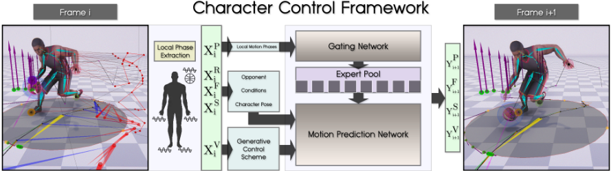
Physically-basedCharacterAnimation. Physically-based character animation, where the characters are controlled kinematically using physical rules as constraints, or controlled by torques under physical environments, can be applied for synthesizing motion that involves fast, dynamic contacts.
Methods such as spacetime constraints [Witkin and Kass 1988] let users provide the contact pattern as conditions, and then optimize the motion using physically-based constraints. Liu and Popović [2002] compute humanoid jumping motions by spacetime constraints. As specifying such contact patterns can be difficult for fast and dynamic movements, Ye and Liu [2012] propose to predict such contacts by evolutionary strategies. The focus of these methods is to apply optimization to compute a motion that satisfies physical constraints. In our research, we are more interested in learning the way humans produce such contacts as part of learning complex behaviors.
Another direction of physically-based character control is the forward dynamics approach [Coros et al. 2010; Hodgins et al. 1995; Raibert and Hodgins 1991; Yin et al. 2007], where joint torques are computed and applied to the body to synthesize realistic movements. Simulating movements with multiple contacts is known to be a difficult problem in such frameworks due to the instability introduced by the contacts. Liu et al. [2010] propose a method to randomly add minor offsets to the motion to guide the body to follow a given motion capture trajectory. Liu et al. [2016] learn a model with control graph and linear feedback policies that can produce character movements according to the user inputs in a stable manner. This idea is further extended to learn basketball dribbling [Liu and Hodgins 2018], where deep reinforcement learning is applied to learn the complex arm motion to control the ball. The amount of skills that can be learned by this framework is limited, and there is a scalability issue for learning a wide range of motions from a large motion capture database due to the intense computation for openloop and feedback policies.
DeepMimic [Peng et al. 2018] is proposed as a general deep reinforcement learning framework to follow motion capture data in a physically-based environment. As it is designed to only follow a short motion clip, Park et al. [2019] and Bergamin et al. [2019] propose frameworks to follow longer sequences of motions produced by a small motion graph [Arikan and Forsyth 2002; Kovar et al. 2002; Lee et al. 2002] or motion matching [Clavet 2016]. The scalability of these methods is yet to be explored as they are trained with a relatively small dataset. Our technique can potentially replace the motion matching module of [Bergamin et al. 2019] for faster synthesis of reference motions.
A different option to let a character follow a reference motion capture data in a physically-based environment is model predictive control: Hong et al. [2019] create a soccer player controller to dribble a ball, and show its robustness with respect to other players tackling. iLQG [Todorov and Li 2005] is used to compute the optimal set of torques and gains to follow a reference motion. The reference motion is selected by nearest neighbor search: again, our proposed method can potentially be applied as a motion planner for this approach.
In summary, learning a rich set of interactions where the contacts quickly switch in a complex manner from a large motion capture dataset without manual human labelling is a problem yet to be solved, either in a the kinematics or physically-based domain. We propose a novel scheme to learn such complex skills from a very large motion capture database.
3 SYSTEMOVERVIEW
Our deep learning framework is a mixture-of-experts scheme similar to [Zhang et al. 2018] and [Starke et al. 2019]. The system consists of the motion prediction network and the gating network (see Fig. 2). The gating network computes a set of expert weights, and learns how to dynamically combine them via blending coefficients to construct the motion prediction network. The motion from one frame into the next is then computed in an autoregressive fashion from the current character state and the user-given control commands.
To enable the framework to learn basketball movements like quick ball maneuvers or player-interaction movements from a large motion database, we propose two main enhancements: first, training the system with local motion phases, and second, a generative control model that takes as input the raw high-level user control commands and generates a sharper variety of control signals.
The local motion phases are computed individually for each bone that makes contacts with an object/environment and can encode asynchronous movements of the limbs. This is fundamentally different to the work in [Starke et al. 2019], where movements of different actions are each assumed to be synchronised by a single global phase variable - this requires a careful labeling process or defining explicit rules about when the action is starting and ending, which can be difficult and also sometimes ambiguous. The local motion phase is computed by a uniform rule based on contacts of the individual bones, and is simple to compute automatically.
The generative control model is introduced to produce a wide variation of sharp movements from coarse high level control signals provided by the user. When there are many motions that correspond to the same input signal, a simple regression by a deterministic model will result in an averaged motion where the sharpness is lost with little variation. We cope with this problem by introducing a generative model that takes as input the raw high-level user control commands and random noise, and generates a sharper sequence of control signals from that. This enables the system to not only produce motions in higher quality, but also to generate variations in a non-deterministic fashion.
In the following, we will first describe about the inputs and outputs of our system in Section 4. We then introduce the local motion phase in Section 5, followed by the generative control model in Section 6. The network training process is described in Section 7 and the user interface for character control is described in Section 8. The experiments and evaluation are given in Section 9.
4 SYSTEM INPUTS ANDOUTPUTS
Our system is a time-series model that predicts the state variables of the character, the ball etc. in the next frame i + 1 given those in the current frame i. The inputs and outputs are designed such that our system can produce close interactions between the character and an object, an environment and another character. Some variables for control and conditioning are application oriented: here we mainly describe in the basketball setup, although the concept is general and applicable to other motions such as maneuvers of objects and interactions with the environment. For training, the Cartesian features in the input and output are transformed into the root coordinate system of the character at frame i and i + 1, respectively. All features live in a time series window 1 T 1s -1s within which data of 13 uniformly-sampled points (6 each in the future and past 1s window, and one for the current frame) are collected. How the values are extracted from the motion capture data is explained in Appendix A.1.
Inputs. The complete input vector Xi at frame i consists of five components Xi = {X S i , X V i , X F i , X R i , X P i } where each item is described below.
1 We use the notation T t1 t0 = N to describe that we collect N samples of data within a time window of t0 ≤ t ≤ t1.
· Character State X S i = {pi , ri , vi } represents the state of our character with B = 26 bones at the current frame i. it consists of the bone positions pi ∈ R 3B , bone rotations ri ∈ R 6B and bone velocities vi ∈ R 3B , where each bone rotation is formulated by its pair of Cartesian forward and up vectors to create an unambiguous and continuous interpolation space [Zhang et al. 2018].
· Control Variables X V i = {T p i , T r i , T v i , I p i , I m i , Ai } are the variables used to guide the character to conduct various basketball movements. It consists of the following channels that are sampled in the past-to-current time window T 1s -1s = 13.
- Root Trajectory T: For controlling the character locomotion, we train our system on the horizontal path of trajectory positions T p i ∈ R 2T , trajectory directions T r i ∈ R 2T and trajectory velocities T v ∈ R 2T (see Fig. 3, top left).
i
- Interaction Vectors I: A set of 3D pivot vectors I p i ∈ R 3T and its derivative I m i ∈ R 3T around the character, that together define the dribbling direction, height and speed to direct a wide range of dynamic ball interaction movements and maneuvers (see Fig. 3, top right). We describe further details about interaction vectors in Appendix A.1.
- Action Variables A: The action variables Ai ∈ R 4T consist of four actions that are defined as A = {Idle, Move,Control, Hold}, where each of them is between 0 and 1.
During runtime, the interaction vectors produce different effects according to the action variables and the state of the opponent. If the action state is in Move and Dribble, the character will dribble the ball, and if in Stand and Hold, the character will move the ball to the target location. When using the Shoot action, the interaction vectors control height and speed for throwing the ball. If the character is not controlling or holding the ball, I P i and I M i are controlled by the opponent character, and induce the user character to produce defence motion.
· Conditioning Features X F i = { ˆB p i , ˆB v i , B w i , Ci } are composed of the following items that are each sampled along the past-to-current time series window T 0s -1s = 7.
- Ball Movement ˆB: We use the past movement of the ball of positions ˆB p i ∈ R 3T and velocities ˆB v i ∈ R 3T to guide the prediction for next frame. This conditioning is helpful since ball movement is typically highly fast-paced. We further give the ball control weights B w i ∈ R T as input to the network, which were used to transform the original ball parameters from Bi to ˆBi in order to learn the ball movement only within a control radius around the character (see Appendix A.2).
- Contact Information C: Similarly, we condition the generated motion on the contacts Ci ∈ R 5T for feet, hands and ball that appeared during the past to stabilize the movements (see Fig. 3, left bottom).
· Opponent Information X R i = {wi , di , g p i , g r i , g v i } are the variables that describe the state of the opponent character with respect to the user character. Those consist of wi ∈ R T , which are labels that tell if the opponent is within the 5 meter radius (1 if within the radius, otherwise 0), and g p i , g r i , g v i ∈ R 2T are 2D vectors between position samples of the user and opponent trajectories, as well the direction and velocity of the opponent trajectory, all in the time

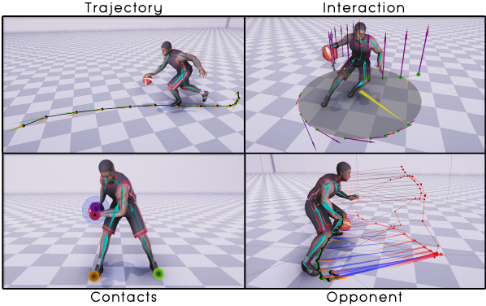
window of T 1s -1s = 13. Those are further weighted using wi which makes sure they are only active when the opponent is close, and are also required to handle captured data where no opponent is available. Finally, di ∈ R B are the distance pairs within 5m radius between the corresponding B = 26 joints of the two characters at current frame i (see Fig. 3, right bottom).
· Local Motion Phases X P i = Θi ∈ R 2KT are each represented by 2D phase vectors of changing amplitude for K = 5 key bones for feet, hands and ball, and are sampled along the past to future time series window T 1s -1s = 13. The details of the bone-level phase are described in Section 5.
The bone-level phases X P i are fed into the gating network, the control variables X V i are fed into the generative controller, and the rest are fed into the motion prediction network.
Outputs. The output vector Yi +1 = {Y S i +1 Y V i +1 , Y F i +1 , Y P i +1 } for the next frame i + 1 is computed by the motion prediction network, and consists of the following four components.
· Character State Y S i +1 = {pi +1, ri +1, vi +1} is pose and velocity of the character at next frame i + 1 with B = 26 bones.
• Future Control Variables Y V i+1 = {T p i+1 , T r i+1 , T v i+1 , I p i+1 , I m i+1 , Ai+1} are the future control signals each sampled along the current to future time series window T 1s 0 = 7 of the next frame i + 1. During runtime, these features are blended with the given user-guided control signals and fed into the input in the next frame, such that the character produces plausible motion while following the user instruction:
Layout overlap detected — compare original region

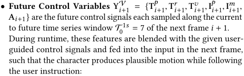

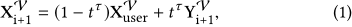
where X V user are the control signals produced from the user inputs by hand-crafted rules, t ranges from 0 to 1 as the trajectory gets further into the future, and τ represents an additional bias that controls the responsiveness of the character.
· Conditioning Features Y F i +1 = { ˆB p i +1 , ˆB r i +1 , ˆB v i +1 , B w i +1 , Ci +1 } are computed for the next frame i + 1. Note that the output also includes the delta ball rotation ˆB r +1 , which is used to update the
i
orientation of the ball in the next frame. The predicted weights ˆB v i +1 are used again to transform the ball coordinates to the real world values (see Appendix A.2).
· Local Motion Phase Updates X P i +1 = {Θi +1, ∆Θi +1} are computed in a fully autoregressive fashion, and contain the phase vectors Θi +1 ∈ R 2KT as well as their updates ∆Θi +1 ∈ R 2KT for the K = 5 key bones, covering the current to future time series samples T 1s 0s = 7 of the next frame. Since the network can update all phases in an asynchronous and independent fashion and in order to prevent error accumulation over multiple frames, we perform an interpolation to compute the new updated phase vectors Θ ′ i +1 , which keeps their combination in a well-defined manifold:

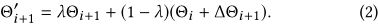
5 LOCAL MOTION PHASE
In this section, we describe our novel feature that we call the local motion phase, which boosts the system to learn movements where different parts of the body move asynchronously, such as those during basketball plays. We first describe the motivation of introducing the local motion phase, and then how to compute them from the motion capture data.
5.1 Motivation of Using the Local Motion Phase
The use of a phase variable is typically defined based on semantically meaningful start and end poses e.g. according to the foot-contact pattern, and introduces a strong connection between timing and movement. Such alignment is particularly helpful for neural networks to generate high-quality human locomotion [Holden et al. 2017] and scene interaction movements [Starke et al. 2019]. Intuitively, there are two main reasons why such phase information leads to improved quality: First, it clusters the motion in a way that the network only requires learning a smaller subset of poses, actions and transitions for each phase state. Second, it forces the animation to keep moving forward in time, whereas autoregressive motion generators can otherwise easily get stuck in poses of similar timing, resulting in unresponsive moments or missing motion details.
However, defining a global phase variable for asynchronous movements where different body parts move at different and consistently changing frequencies/phase shifts, such as when playing basketball, is extremely difficult or sometimes strictly not possible. In turn, any motion that does not follow an identical pattern would inevitably become blended with different motion states, which makes a single global phase difficult to scale and impractical to be applied to unstructured motion data.
To cope with this issue, we introduce the concept of local motion phase, which inverts the original concept from using a single global phase to instead describing the character motion by a set of multiple independent and local phases for each bone. Here we define the phase based on a simple rule; the contact transitions between the bone and other objects/environment. This allows us to extract the phase in a fully-automatic fashion (see Section 5.2), and also make it generic to arbitrary movements. Using the local phase, the system can learn to align the local limb movements individually, while also integrating their movements to produce realistic full-body behavior.
5.2 Computing the Local Motion Phase fromMotion Capture Data
The local phase is computed as a preprocess from the motion capture data, by fitting a sinusoidal function

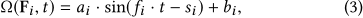
parameterized by Fi = {ai , fi , si ,bi } (i is the frame index), to a filtered block function G(t) that represents the contact between the bone and the object/environment (see Fig. 4).
This fitting is done by inferring Fi at every frame i that minimizes the following RMSE loss defined in a window of N frames centered at frame i:

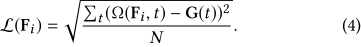
G(t) is computed by first normalizing the original block function (value set to 0 if no contact, and 1 if in contact) 2 in a windowW of 60 frames (1 second) centered at frame j:

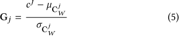
where c j is the original block function value, and µ C j W and σ C j W are the mean and standard deviation of contacts within that window, and then applying a Butterworth low-pass filter to the entire domain:

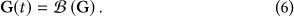
After applying this normalization, shorter contacts result in larger positive values that are surrounded by smaller negative values and vice versa to maintain similar importance for different contact duration (see Fig. 4(1,2,3)). The window size N in Eq. (4) is 60 (1 second) but is adjusted according to the frequency of the surrounding contacts. The cut-off frequency of the Butterworth low-pass filter is set to 3.25, which is computed based on the Shannon-Nyquist sampling theorem with respect to the time series window of T 1s -1s = 13 samples that are trained in the network.
After optimizing Eq. (4), a 1D phase value can be computed by

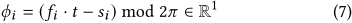
2 Note that the contact labels are extracted automatically; see Appendix A.3 for the process.

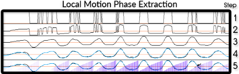
![Fig. 5. Examples of local motion phase extractions for feet (LF,RF), hands (LH,RH) and ball (B). The clip represents forward dribbling with switching the hand dribbling the ball. The black curves are the target signals and the cyan curves are the fitted curves computed by optimization. The resulting phases are visualized by the blue bars and the amplitudes are visualized by the opacity of the bars. Top is the results by the evolutionary strategy, where the amplitude and phase information are extracted robustly, and the bottom is gradient-based optimization which yields rather unstable and noisy misalignments.](assets/0106-picture.png)
which together with the optimized amplitude parameter ai and maximum bone velocity magnitude | |vΦ | |∞ within a frequency-based frame window Φ = 1 ∆ϕi enables to generate distinctive combinations of local 2D phase vectors for each motion (see Fig. 4(4,5)):

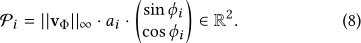
The obtained 2D vectors P for the bones cover information about the timing and speed of the movement, and are fed into the gating neural network as features (see Fig. 2). Their trajectories are smooth as the loss Eq. (4) is defined in a sliding window whose center is the current frame. In particular, modulating the phase vectors by amplitudes has two key aspects in modeling important information about the character motion: First, P becomes scaled to zero if a bone is not moving, which is important as the phase ϕi is rather undefined in such case. Second, it helps to distinctively separate slower and faster movements of similar contact patterns, i.e. walking and running or dribbling at different speeds. Therefore, it can also function as a control variable of the motion; by scaling down the amplitude, the motion of the limb can be inhibited. For example, the motion of the arm opposite to the one dribbling the ball can be reduced by scaling down its corresponding amplitude.
For fitting (minimizing Eq. (4)), we adopt an evolutionary strategy from [Starke et al. 2018]. As our loss function is composed of trigonometric functions, the optimization landscape follows a similar non-convex shape, which results in many local minima. We combine a global probabilistic optimization (genetic algorithm and particle swarm optimization) with a local optimization technique (BFGS). Such a combination can effectively combine the benefits in robustness as well as scalability of evolutionary algorithms with the speed, accuracy and continuity of gradient-based methods. The optimization pipeline follows that of Starke et al. [2018], except we apply it to finding the phase parameters where they use it to solve an inverse kinematics problem. The global search first stochastically samples a swarm of signal parameters within a range of lower and upper limits. The samples are recombined, randomly offsetted and then resampled by being combined with the best sample in the swarm. The above procedure is repeated for generations to explore and find good samples in the landscape. The BFGS then selectively exploits some elite individuals within subregions to better and more easily converge to solutions of high accuracy. We tested several other gradient-free as well as gradient-based optimization methods, including conjugate gradient, BFGS, Cobyla and NelderMead, which all performed poorly on this task when used alone (see Fig. 5). Our chosen approach can robustly converge to suitable signal parameters.

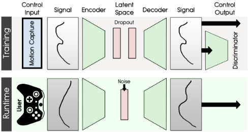
Our solution can quickly compute a smooth local phase trajectory. Note that we solve the optimization problem per frame and thus the number of parameter is small, which allows the evolutionary strategy to quickly converge to a global minimum. Due to the large overlap of the sliding window, we can obtain a smooth phase trajectory with temporal coherence.
In summary, the local motion phase can be extracted fully automatically from the full body motion and functions as a feature that can produce high quality motion, which we will demonstrate in Section 9.
6 GENERATIVE CONTROL MODEL
We now describe our generative control model, which is introduced to produce a variation of realistic movements from the coarse user control signal. Our idea is to produce a latent space of the control signal via adversarial training of an encoder-decoder network, and then produce a variation by adding noise to the latent code computed from the user-control signal during runtime. The generative control model is pretrained using the control signals computed from the motion capture data.
The generative control model has three components: an encoder E, which first takes a smoothed trajectory produced by blending the user gamepad input signal and the autoregressive control signal from the previous time step and encodes it into a latent code; a decoder G that produces the control signal from the latent code;
finally, a discriminator D that distinguishes the generated control signal from the ground truth control signal. The dimensionality of the latent code is set low such that it becomes a bottleneck of the network, and constructs a manifold of the control signal.
More specifically, the encoder E is defined as:

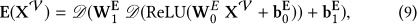
where W E 0 ∈ R h×n , W E 1 ∈ R m×h , b E 0 ∈ R h , b E 1 ∈ R m are the network parameters, h = 512 is the number of hidden units in each layer, n is the input dimension and m is the dimension of latent space, where we set it to be n/2 to create the bottleneck, ReLU is the activation function where we use Rectified Linear Unit, and D is the dropout layer where the dropout rate is set to be 0.3 to avoid overfitting during training and 0.0 at inference. Similarly, the decoder G is defined as:

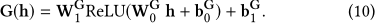
where W G 0 ∈ R h×m , W G 1 ∈ R n×h , b G 0 ∈ R h , b G 1 ∈ R n are the network parameters and h = 512 is the number of hidden units in each layer. Finally, the discriminator D is defined as:

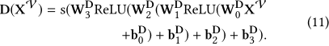
where W D 0 ∈ R h0×n , W D 1 ∈ R h1×h0 , W D 2 ∈ R h2×h1 , W D 3 ∈ R 1×h2 , b D 0 ∈ R h0 , b D 1 ∈ R h1 b D 2 ∈ R h2 b D 3 ∈ R 1 are the network parameters, h0, h1 and h2 are the number of hidden units in each layer set to 128, 64, 32, respectively, and s is the sigmoid function to map the output to be a probability between 0.0 and 1.0.
The system is trained with reconstruction loss and adversarial loss. We use X V , the control variables of the input vector X, as our training data. It is encoded in to the latent space by the encoder: h = E(X V ). After the encoder, the original control signal is reconstructed by the decoder X V r = G(h). The reconstructed signal is evaluated by a L1 loss with the original signal Lℓ1 (X V , X V r ) and the adversarial loss Ladv(E, G, D):

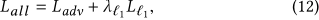
where λℓ1 is a weight set to 5.0 to make sure that the Ladv and Lℓ1 have similar magnitude. The adversarial loss is defined by

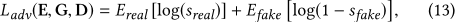
where we denote the output score of the discriminator D on real and fake inputs by sreal and sfake, respectively. The encoder, decoder and discriminator are trained jointly.
During runtime, X V is computed by blending Y V in the previous cycle with the user input signals (see Eq. (1)). Then it is projected to the latent space, and modified by adding a random noise sampled from a Gaussian. With this, the control signal recovered by the decoder will be containing valid variance which is very hard to be hand-coded from gamepad input. Note that there is a tradeoff between the scale of the noise and the response time of the character: the larger the scale is, the less responsive the character becomes due to the deviation from the user control signal.
We show some examples of an input and output control signal in Fig. 7. It can be observed that the input trajectory is a smooth trajectory while the output trajectories produced from different noise samples have variation with fine details. Using these as input to the motion prediction network will result in different body motion as we present in Section 9.

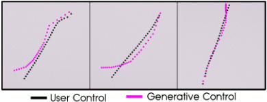
The question that arises is that of how to manage the controllability of the character when adding noise in the latent space as we do not condition the noise on the user instruction (see Section 10 for discussions about the design). We find the following approach to be simple and effective. We sample noise vectors from different random seed and use them as style variables. The animator can pick them as the behavior style of each character. For increasing the stochasticity, we can blend in and out the noise produced from such seeds selected randomly during runtime.
We also evaluate how the motion deviates from the original motion when changing the level of noise amplitude to find a level that can produce variations but stays close to the original control signal. The plots of scaling the noise level and the resulting RMSE of the control signals, as well as the corresponding motions are shown in Fig. 8. When the noise level exceeds 1, which corresponds to the standard deviation of the latent code of the generative control, the synthesized motion starts to either deviate significantly from the control signal or result in a corrupted motion. We find a level around 0.25 to 0.75 is suitable for producing variations while keeping the motion under control.
7 NETWORK TRAINING
The training is done by first normalizing the input and the output of the full dataset by their mean and standard deviation, pretraining the generative control model and then training the main network composed of the gating network and motion prediction network in an end-to-end fashion. The processed data is exported from Unity and used for training our framework implemented in TensorFlow.
For training the main network, similar to [Starke et al. 2019; Zhang et al. 2018], we use the AdamWR optimizer with the warm restart technique; the learning rate is initialized with the value of 1.0 · 10 -4 and later adjusted by the weight decay rate with the initial value of 2.5 · 10 -3 . Dropout rate is set to 0.3, hidden layer size in the gating network is set to 128 and in the motion prediction network to 512 respectively.
Since we predict the local motion phase updates for the next and future frames to autoregress them back into the gating network input, we use teacher force training [Li et al. 2017; Williams and Zipser 1989] to make the network adapt to its own prediction inaccuracies. We slice each clip into sequences of 8 frames and use a uniform probability of 0.5 to update the phase input of the next frame by the output of the previous phase updates by Eq. (2). This helps to prevent the network from overfitting to future phase alignments that it would see during training but not during inference.

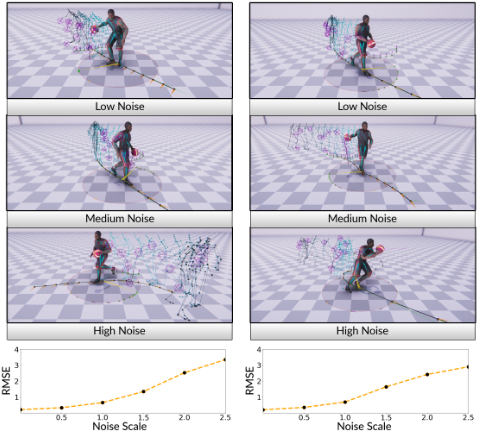

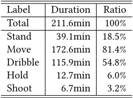
Recognized table text (check against the image)
| Label | Duration | Ratio |
| Total | 211.6min | 100% |
| Stand | 39.1min | 18.5% |
| Move | 172.6min | 81.4% |
| Dribble | 115.9min | 54.8% |
| Hold | 12.7min | 6.0% |
| Shoot | 6.7min | 3.2% |
The composition of our complete dataset of 3 hours used for training is listed in Table 1, breaking down type and amount of clips and how we separate them into different actions. All motion is doubled by mirroring, downsampled from 60Hz capture to 30Hz, and then exported twice by shifting the data by one frame. After training, the data is compressed from ∼3GB raw motion capture data (∼8GB generated training data) to ∼24MB network weights.
8 CHARACTER CONTROL SYSTEM
The character is controlled via a gamepad's joysticks and buttons (see Fig. 9) to offer a wide range of control signals to the user. The mapping between the user input to the actions are designed as follows. The translation and rotation motion are driven by the left joystick; when the joystick is simply tilted, the character moves to the direction without changing the orientation. When the joystick is rolled, its rotation is integrated overtime and the character turns its facing direction. When the joystick is pressed, the character sprints. Left and right triggers are used for spin, which will not change the trajectory direction but selectively rotate the facing direction of the character in a quick fashion. The right joystick is mapped to the interaction vector I, and used to control the dribbling locations around the character, which can produce movements such as switching the ball between hands, around the body or between legs. The dribbling height and frequency is controlled when the right joystick is pressed and moved horizontally or vertically. Pressing the Holding button will make the character stop dribbling and hold the ball, or catch the ball alternatively. Pressing the shooting button will make the character shoot the ball, where direction, height and speed is controlled by the interaction vectors. When the character is in the defending mode, pressing Attacking button will make the character steal the ball from the opponent and take control of it.
Each player controls its own character, however, the network instance can be shared between different characters which have the same network weights. This effectively saves memory and storage since we do not require training multiple networks for different roles or actions.
9 EXPERIMENTS AND EVALUATION
Our animation system is implemented in the Unity engine, and the neural network is queried through a socket interface to compute the character movements. We conduct our experiments on a MSI GT75 Titan gaming laptop with Intel i7-9750H processing cores and a NVIDIA GeForce RTX2080 GPU, requiring 2-4ms per frame for each character including user control processing, inference time and scene rendering. We run the animation at 30Hz framerate.
9.1 Animated Results
We animate the character through the gamepad using the interface described in Section 8. The example snapshots for various movements are shown in Fig. 10. Realistic movements that appear similar to the motion capture data with few artefacts can be synthesized in real-time. In addition to the complex character movements with multiple contacts and quick maneuvers, the interactions between multiple characters, such as stealing the ball and avoiding the opponent, can be produced. The interactions of two characters are produced by two players controlling each character via their own gamepad.

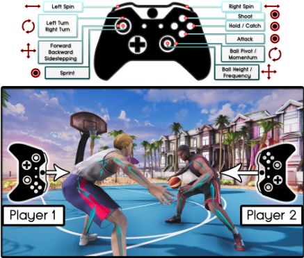

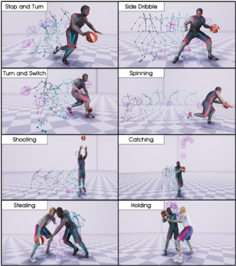
To animate the physically-plausible ball motion during catching and shooting movements, the ball motion is controlled via physical simulation. When catching the ball, we let the network override the simulated ball position and velocity with its predicted values based on the hand contact predictions. Similarly, the physics override the network predictions as the ball leaves the hands during shooting.
To animate stealing actions, we guide the hand of the character to the ball via inverse kinematics; this automatically activates the contact state of the hand and the ball and then the dribbling action automatically. As the system is trained with a variation of stealing motion, the corrupted motion by inverse kinematics are projected to natural stealing motion through this process.
The readers are referred to the supplementary video for the animated results.
9.2 Quantitative Evaluation
We provide a quantitative evaluation of our system in terms of the body movement, contact accuracy and responsiveness using a test dataset. The control variables of the test data are extracted as described in the Appendix, and given to our model as the input. Using the output motion we compute values for each criterion. We compare our method with other existing methods such as PFNN [Holden et al. 2017], MANN [Zhang et al. 2018] and LSTM [Lee et al. 2018]. We also note that it is in general difficult to directly compare complex animation systems, given that each system is a complex artefact unto itself.

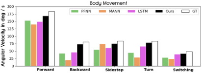

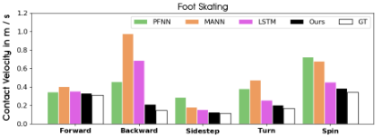
9.2.1 Body Movement. We quantify the body movement by the sum of the absolute angle updates of all the joints per frame. Motions synthesized by neural networks tend to smooth the motion; we found this metric provides a good indication of how agile and unsmoothed the generated motion appears. Comparing the values of our method with PFNN, MANN and LSTM in Fig. 11, our model outperforms all types of motion. The difference is more significant for movements where the data samples are rather sparse, such as backward and turning motion. There is much more data for forward motion where all the models train well, whereas our method does not overfit to those but can reconstruct the other motions too.
9.2.2 Contact Accuracy. We evaluate the contact accuracy between the feet and the ground. For that contact accuracy between the feet and the ground, we compute the amount of foot skating by summing the horizontal movements of the feet when their height and vertical velocity are below thresholds and thus should be in contact. As can be observed in Fig. 12, our method has the lowest foot skating. We also plot the distance between the hand and the ball during a dribbling motion in Fig. 13. To produce an accurate dribbling, the distance needs to go zero for every bounce of the ball; this happens only consistently for our model (black line) and LSTM (magenta line), whereas the latter produces occasional ball movement artefacts.
9.2.3 Responsiveness. The responsiveness of the character to the user inputs is one of the most important aspects in character control, and can be evaluated by measuring how much time is needed in average to reach the target speed and orientation, as well as for completing tasks such as spinning since the user input signal was given. The plot of the average time required for completing the tasks are shown in Fig. 14. Our response is slightly worse than moving forward compared to PFNN though almost the same; for other movements our model outperforms the others. LSTM performs worse in all cases, possibly due to the lack of data augmentation. Our original dataset is already very large compared to those used for training other LSTMmodels, such as [Lee et al. 2018] (3 hours vs. 10-12min). Augmenting the data as done in [Lee et al. 2018] (2000% of the original data), may improve the responsiveness significantly, although will require much longer training time. Reducing the initial data size and then doing a data augmentation may be feasible, although that will result in less variation in the motion.

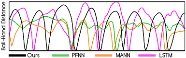

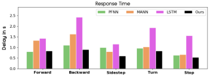

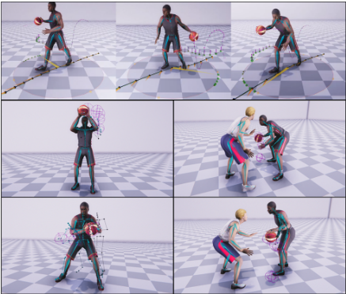

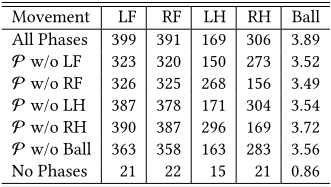
Recognized table text (check against the image)
| Movement | LF | RF | LH | RH | Ball |
|---|---|---|---|---|---|
| All Phases | 399 | 391 | 169 | 306 | 3.89 |
| P w/o LF | 323 | 320 | 150 | 273 | 3.52 |
| P w/o RF | 326 | 325 | 268 | 156 | 3.49 |
| P w/o LH | 387 | 378 | 171 | 304 | 3.54 |
| P w/o RH | 390 | 387 | 296 | 169 | 3.72 |
| P w/o Ball | 363 | 358 | 163 | 283 | 3.56 |
| No Phases | 21 | 22 | 15 | 21 | 0.86 |
9.3 Generative Variations and Generalization
We show examples where we can vary the movements of the characters by sampling noise (see Fig. 15). The variation in the control signals produced by the noise sampling results in different body and ball movements during holding, dribbling and interactions.
Our system can also synthesize novel combination of movements that are not observed in the training set. For example, the dataset contains the motion where the ball is dribbled behind the back while moving forward and at the same position, but not while walking backward or side-stepping (see Fig. 16, left). Our system can learn these behaviors and combine them, allowing the character to dribble behind the back while walking backward and side-stepping. Similarly, the dataset does not contain data where the player holds the ball and run, but our system can produce such movements by providing such a control signal (see Fig. 16, right).
9.4 Character Interaction
We simulate a one-on-one basketball play by letting two players freely control their own character using their gamepads (see Fig. 1). Our system can automatically trigger realistic behaviors: the dribbling character points its free arm towards the opponent character to block it from approaching. The defense character standing in the way automatically spreads its arms to stop the dribbling character from moving forward. These response motions are learned from the training data where the players are interacting with each other. Note that character movements during the interaction sometimes appear confused or unrealistic due to the uncommon trajectories produced by the user. The space of spatial relations between the characters is very large and the training data only covers a small subset of such space. The full character trajectory control (2D translation + 1D translation) is also rather complex and it is not always easy for the user to control the character to respond to the other character in a realistic manner. A higher-level controller that outputs a control signals or partially blend the user control signals to them could potentially improve the realism in path generation.

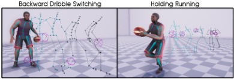

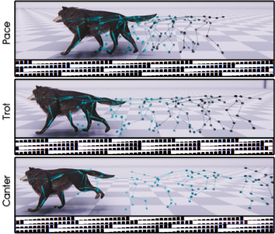
9.5 Evaluating the Influence of Local Motion Phases
Using a forward dribbling motion as an example, we evaluate the influence of the local motion phases to the motion by deactivating each of them and observing the effect. The average updates are measured in degrees/frame for each selective bone chain, and inm/s for the ball movement. The results are shown in Table 2. If either left or right foot phase is deactivated, the other can slightly compensate for the inactive one. If the left or right hand is deactivated, the network automatically starts dribbling with the other hand that is active. The ball movement shows higher redundancy in connection with other phases. When all phases are turned off the character is completely stiff and slides.
9.6 Quadruped Motion Learning
We also train a quadruped controller using the local motion phase computed for every foot based on its contact with the ground. We use the same architecture and control system as in MANN [Zhang et al. 2018] but only switch the input to the gating network from the feet velocity to the local motion phases. This greatly helps to improve the response and generality of the control. As observed in Fig. 17, different locomotion modes can be synthesized by simply changing the target velocity of the character. For the sitting to walk, the MANN has rather slow response from switching from sitting to walking, where our system immediately starts to walk given the user instruction. In terms of generalization, our model can synthesize movements that are not observed during training, such as side-stepping and quick turning (see supplementary video) while MANN will simply slide the body without stepping for such unobserved control signals.

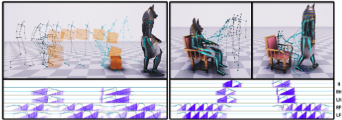
9.7 Object Interaction Learning
We apply the local motion phase to the object/environment interaction examples in [Starke et al. 2019]. The snapshots of picking up and putting down a box and sitting on and standing from a chair as well as the corresponding local motion phases are shown in Fig. 18. Our system can stably produce realistic movements automatically, while [Starke et al. 2019] requires the motion to be aligned via a global phase that is carefully handcrafted per action type.
10 DISCUSSION
Our system improves on the evolution of expert-based character controllers [Holden et al. 2017; Starke et al. 2019; Zhang et al. 2018]; a common question refers to what enables the previous networks to perform well on their given tasks, and why they cannot directly be used for each other domain, i.e. biped, quadruped, interaction. What all those models have in common is that they aim to segment and dynamically interpolate the movements of the same class and timing using jointly trained expert networks.
The PFNN [Holden et al. 2017] uses a global phase variable to compute the blending weights of the experts for animating biped locomotion. This is possible because the locomotion always follows the same left-right foot-fall pattern. On the other hand, defining a single phase variable is not possible for quadruped locomotion due to inconsistency of the foot-fall pattern at different speed.
In MANN [Zhang et al. 2018], the handcrafted phase function is replaced with a gating network that uses the foot velocities as features. The foot velocities naturally produce a well-separating feature space to segment the movements depending on the locomotion mode gaits - which unfortunately is not the case for regular biped locomotion.
The NSM [Starke et al. 2019] utilizes the gating structure developed in MANN to learn various types of interaction motions such as sitting on chairs, opening doors, carrying objects under a single structure that enables to define a single global phase separately for each task. The NSM generalizes the PFNN by expanding its initial scope from pure locomotion to different types of scene interaction motions. However, labeling and defining rules for each motion phase as well as requiring structured motion capture data of synchronized movements remains an issue.
With our enhancement of using the local motion phase, we can
· expand the scope of movements to fast-paced, asynchronous interactions with dynamic objects and other characters,
· overcome limitations of global phases in order to handle unstructured biped locomotion,
· improve quadruped motion in generating more detailed and responsive movements and
· produce variations within same actions using a generative control scheme.
Alternative Design of the Generative Control Scheme. An alternative structure for the generative control scheme could be cGAN [Mirza and Osindero 2014], for example as applied to add photo-realistic details to images [Ledig et al. 2017], or stylized details to terrains [Zhao et al. 2019]; we experimented with such a structure but found this is not straightforward. For such a design, we need to define a condition extracted from the ground truth control signal. If we use a filtered, smooth control signal as a condition (as a smoothed terrain is used as a condition in [Zhao et al. 2019]), during the training we are making an assumption that the control signals produced by the user control has similar properties to those produced by the smoothing filter. This is a very strong assumption and we find this is not necessarily the case. A better way to extract the condition is that we use the actual control signals from the user to train the cGAN on. But capturing those control signals from the user, and then mapping them to the corresponding motion is not straightforward and may require manual and labor intensive processes. Our design to construct a latent space of the control signal in an autoencoder fashion and adding noise at runtime can effectively produce a large variation of movements observed during training.
Limitations. The systemwill fail when the control signal given to the network is far from what have been observed during training. For example, when the user moves the body and the ball in random directions using the two joysticks, a very random control vector can be produced, and the generative control model will have difficulty in projecting it to a realistic control signal, resulting in penetrations etc. The unobserved control signal can mislead the output of the motion prediction network. Fixing this will require either preparing a generative control model that is trained with noise values at the level of such random user control, or preparing a logic that filters unrealistic control signals.
11 CONCLUSION AND FUTUREWORK
We propose a novel feature called the local motion phase, which together with our mixture-of-experts architecture can learn fast and dynamic movements during basketball play. The features are extracted by a hybrid global and local optimization technique from unstructured motion capture data. We also propose a novel generative control model that can produce a wide variation of movements from abstract control signals. Fast and complex interactions between the character and the ball, or with another character can be synthesized in real-time after training the system with motion capture data of basketball plays.
One of the future work is that currently the local phase is defined based on contacts: extending this to non-contact movements is the next step. Another issue is the long turnaround time after making changes: current character control models need to be retrained from scratch when the control signal is readjusted. Learning the pure motion manifold and the latent mapping from a decoupled control system will be interesting to significantly reduce the turnaround time. Finally, it will be interesting to extend our framework for physically-based animation by combining it with physically-based motion tracking methods [Bergamin et al. 2019; Hong et al. 2019; Park et al. 2019].
ACKNOWLEDGMENTS
We thank Fabio Zinno for his help acquiring the basketball dataset and the fruitful discussions on this research, as well as Matteo Loddo for skinning the character model. We further want to thank Mohsen Sardari, Harold Chaput, Daniel Guinn and Navid Aghdaie for the various support throughout this project. Finally, we also wish to thank the anonymous reviewers for their constructive comments.
REFERENCES
Okan Arikan and David A Forsyth. 2002. Interactive motion generation from examples. ACM Trans on Graph 21, 3 (2002), 483-490. https://doi.org/10.1145/566654.566606
Kevin Bergamin, Simon Clavet, Daniel Holden, and James Richard Forbes. 2019. DReCon: data-driven responsive control of physics-based characters. ACM Trans on Graph 38, 6 (2019), 206. https://doi.org/10.1145/3355089.3356536
Simon Clavet. 2016. Motion matching and the road to next-gen animation. In Proc. of GDC.
Stelian Coros, Philippe Beaudoin, and Michiel Van de Panne. 2010. Generalized biped walking control. ACM Trans on Graph 29, 4 (2010), 130. https://doi.org/10.1145/ 1778765.1781156
Katerina Fragkiadaki, Sergey Levine, Panna Felsen, and Jitendra Malik. 2015. Recurrent network models for human dynamics. In Proc. ICCV. 4346-4354. https://doi.org/10. 1109/ICCV.2015.494
Félix G. Harvey and Christopher Pal. 2018. Recurrent Transition Networks for Character Locomotion. http://arxiv.org/abs/1810.02363
Rachel Heck and Michael Gleicher. 2007. Parametric motion graphs. In Proc. I3D. 129-136. https://doi.org/10.1145/1230100.1230123
Jessica K Hodgins, Wayne L Wooten, David C Brogan, and James F O'Brien. 1995. Animating human athletics. In Proceedings of the 22nd Annual Conference on Computer Graphics and Interactive Techniques. 71-78. https://doi.org/10.1145/218380.218414
Daniel Holden, Taku Komura, and Jun Saito. 2017. Phase-functioned neural networks for character control. ACM Trans on Graph 36, 4 (2017), 42. https://doi.org/10.1145/ 3072959.3073663
Seokpyo Hong, Daseong Han, Kyungmin Cho, Joseph S Shin, and Junyong Noh. 2019. Physics-based full-body soccer motion control for dribbling and shooting. ACM Trans on Graph 38, 4 (2019), 1-12. https://doi.org/10.1145/3306346.3322963
Lucas Kovar and Michael Gleicher. 2004. Automated Extraction and Parameterization of Motions in Large Data Sets. ACM Trans on Graph 23, 3 (2004), 559-568. https: //doi.org/10.1145/1186562.1015760
Lucas Kovar, Michael Gleicher, and Frédéric Pighin. 2002. Motion graphs. ACM Trans on Graph 21, 3 (2002), 473-482. https://dl.acm.org/doi/10.1145/566654.566605
Christian Ledig, Lucas Theis, Ferenc Huszár, Jose Caballero, Andrew Cunningham, Alejandro Acosta, Andrew Aitken, Alykhan Tejani, Johannes Totz, Zehan Wang, et al. 2017. Photo-realistic single image super-resolution using a generative adversarial network. In Proc. IEEE CVPR. 4681-4690. https://ieeexplore.ieee.org/abstract/ document/8099502
Jehee Lee, Jinxiang Chai, Paul SA Reitsma, Jessica K Hodgins, and Nancy S Pollard. 2002. Interactive control of avatars animated with human motion data. ACM Trans on Graph 21, 3 (2002), 491-500. https://doi.org/10.1145/566654.566607
Kyungho Lee, Seyoung Lee, and Jehee Lee. 2018. Interactive Character Animation by Learning Multi-objective Control. ACM Trans on Graph 37, 6 (2018). https: //doi.org/10.1145/3272127.3275071
Zimo Li, Yi Zhou, Shuangjiu Xiao, Chong He, Zeng Huang, and Hao Li. 2017. Autoconditioned recurrent networks for extended complex human motion synthesis. arXiv preprint arXiv:1707.05363 (2017). http://arxiv.org/abs/1707.05363
C Karen Liu and Zoran Popović. 2002. Synthesis of complex dynamic character motion from simple animations. ACM Trans on Graph 21, 3 (2002), 408-416. https://doi. org/10.1145/566654.566596
Libin Liu and Jessica Hodgins. 2018. Learning basketball dribbling skills using trajectory optimization and deep reinforcement learning. ACM Trans on Graph 37, 4 (2018), 142. https://dl.acm.org/doi/10.1145/3197517.3201315
Libin Liu, Michiel Van De Panne, and KangKang Yin. 2016. Guided learning of control graphs for physics-based characters. ACM Trans on Graph 35, 3 (2016), 29. https: //doi.org/10.1145/2893476
Libin Liu, KangKang Yin, Michiel van de Panne, Tianjia Shao, and Weiwei Xu. 2010. Sampling-based contact-rich motion control. ACM Trans on Graph 29, 4 (2010), 128. https://doi.org/10.1145/1778765.1778865
Jianyuan Min and Jinxiang Chai. 2012. Motion graphs++: a compact generative model for semantic motion analysis and synthesis. ACM Trans on Graph 31, 6 (2012), 153. https://doi.org/10.1145/2366145.2366172
Mehdi Mirza and Simon Osindero. 2014. Conditional generative adversarial nets. arXiv preprint arXiv:1411.1784 (2014). http://arxiv.org/abs/1411.1784
Tomohiko Mukai and Shigeru Kuriyama. 2005. Geostatistical motion interpolation. ACM Trans on Graph 24, 3 (2005). http://doi.acm.org/10.1145/1073204.1073313
Soohwan Park, Hoseok Ryu, Seyoung Lee, Sunmin Lee, and Jehee Lee. 2019. Learning predict-and-simulate policies from unorganized human motion data. ACM Trans on Graph 38, 6 (2019), 205. https://doi.org/10.1145/3355089.3356501
Xue Bin Peng, Pieter Abbeel, Sergey Levine, and Michiel van de Panne. 2018. Deepmimic: Example-guided deep reinforcement learning of physics-based character skills. ACM Trans on Graph 37, 4 (2018), 143. https://doi.org/10.1145/3197517.3201311
Marc H Raibert and Jessica K Hodgins. 1991. Animation of dynamic legged locomotion. In ACM Siggraph Computer Graphics, Vol. 25. ACM, 349-358. https://doi.org/10. 1145/127719.122755
Charles Rose, Michael F. Cohen, and Bobby Bodenheimer. 1998. Verbs and Adverbs: Multidimensional Motion Interpolation. IEEE Computer Graphics and Applications 18, 5 (1998), 32-40. http://dx.doi.org/10.1109/38.708559
Charles F Rose III, Peter-Pike J Sloan, and Michael F Cohen. 2001. Artist-Directed Inverse-Kinematics Using Radial Basis Function Interpolation. Computer Graphics Forum 20, 3 (2001), 239-250. https://doi.org/10.1111/1467-8659.00516
Alla Safonova and Jessica K Hodgins. 2007. Construction and optimal search of interpolated motion graphs. ACM Trans on Graph 26, 3 (2007). https://doi.org/10.1145/ 1276377.1276510
Hyun Joon Shin and Hyun Seok Oh. 2006. Fat graphs: constructing an interactive character with continuous controls. In Proc. SCA. 291-298. http://dx.doi.org/10. 2312/SCA/SCA06/291-298
Sebastian Starke, Norman Hendrich, and Jianwei Zhang. 2018. Memetic Evolution for Generic Full-Body Inverse Kinematics in Robotics and Animation. IEEE Transactions on Evolutionary Computation 23, 3 (2018), 406-420.
Sebastian Starke, He Zhang, Taku Komura, and Jun Saito. 2019. Neural state machine for character-scene interactions. ACM Trans on Graph 38, 6 (2019), 209. https: //doi.org/10.1145/3355089.3356505
Graham W Taylor, Geoffrey E Hinton, and Sam T Roweis. 2007. Modeling human motion using binary latent variables. In Advances in neural information processing systems. 1345-1352. https://papers.nips.cc/paper/ 3078-modeling-human-motion-using-binary-latent-variables
Emanuel Todorov and Weiwei Li. 2005. A generalized iterative LQG method for locallyoptimal feedback control of constrained nonlinear stochastic systems. In Proceedings of the 2005, American Control Conference, 2005. IEEE, 300-306.
Ruben Villegas, Jimei Yang, Duygu Ceylan, and Honglak Lee. 2018. Neural Kinematic Networks for Unsupervised Motion Retargetting. In Proc. IEEE CVPR. https://doi. org/10.1109/CVPR.2018.00901
J.M. Wang, D.J. Fleet, and A. Hertzmann. 2008. Gaussian Process Dynamical Models for Human Motion. IEEE PAMI 30, 2 (Feb 2008), 283-298. https://doi.org/10.1109/ TPAMI.2007.1167
Douglas J Wiley and James K Hahn. 1997. Interpolation synthesis of articulated figure motion. IEEE Computer Graphics and Applications 17, 6 (1997), 39-45. https: //doi.org/110.1109/38.626968
Ronald J Williams and David Zipser. 1989. A learning algorithm for continually running fully recurrent neural networks. Neural computation 1, 2 (1989), 270-280. https: //doi.org/10.1162/neco.1989.1.2.270
Andrew Witkin and Michael Kass. 1988. Spacetime constraints. ACM Siggraph Computer Graphics 22, 4 (1988), 159-168. https://doi.org/10.1145/54852.378507
Shihong Xia, Congyi Wang, Jinxiang Chai, and Jessica Hodgins. 2015. Realtime style transfer for unlabeled heterogeneous human motion. ACM Trans on Graph 34, 4 (2015), 119. https://doi.org/10.1145/2766999
Yuting Ye and C Karen Liu. 2012. Synthesis of detailed hand manipulations using contact sampling. ACMTrans onGraph 31, 4 (2012). https://doi.org/10.1145/2185520.2185537
KangKang Yin, Kevin Loken, and Michiel Van de Panne. 2007. Simbicon: Simple biped locomotion control. ACM Trans on Graph 26, 3 (2007), 105. https://doi.org/10.1145/ 1276377.1276509
He Zhang, Sebastian Starke, Taku Komura, and Jun Saito. 2018. Mode-adaptive neural networks for quadruped motion control. ACM Trans on Graph 37, 4 (2018). https: //doi.org/10.1145/3197517.3201366
Wenping Zhao, Jianjie Zhang, Jianyuan Min, and Jinxiang Chai. 2013. Robust realtime physics-based motion control for human grasping. ACM Trans on Graph 32, 6 (2013). https://doi.org/10.1145/2508363.2508412
Yiwei Zhao, Han Liu, Igor Borovikov, Ahmad Beirami, Maziar Sanjabi, and Kazi Zaman. 2019. Multi-theme generative adversarial terrain amplification. ACM Trans on Graph 38, 6 (2019), 200. https://doi.org/10.1145/3355089.3356553
A AUTOMATED DATA ANNOTATION
In this section, we describe the process of extracting all state variables from the data that is required for training. To reduce manual labor and avoid data inconsistency due to labeling errors, we design an automated workflow for feature extraction. All motion data processing is performed in the Unity engine. All features live in a time series window T 1s -1s that can cover information of up to 13 uniformly-sampled points within 1s (6 samples) in the past and future around 1 centered root sample at current frame i.
A.1 Extracting Control Variables
To synthesize a wide variation of locomotion and dribbling movements of different speeds, facing directions and interactive maneuvers, we extract three main control channels from the data: trajectory path Ti , action labels Ai and interaction vectors Ii . All control variables are extracted for each time series sample within T 1s -1s .
The trajectory T is computed by projecting the hip bone and applying a Gaussian kernel G on the root rotation to prevent overfitting to the data, similar to [Holden et al. 2017]. In addition, since basketball plays cover fast movements such as spiral turns and quick ball switching maneuvers that can happen in a very short time window, we develop an adaptive filter that can take into account such quick movements:

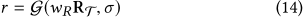
where r is the smoothed root orientation, RT is the global orientation of the root around the vertical axis, σ is the standard deviation set to 1 4 T 1s -1s and wR is a weighting computed by applying another Gaussian filter to �RT:
Some PDF symbols could not be decoded — view original paragraph

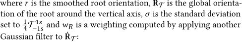

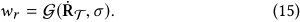
This has a nice effect where movements of the same gradient will produce a more narrow filter width and keep their important content, and movements of oscillating or noisy gradient will sum up to zero and produce a wider filter width to remove such artefacts.
The action labels A describes whether the character is in the state of Stand or Move, and in the Dribble, Hold or Shoot state with respect to the ball. To compute the labels for Stand or Move, we compute the root velocity magnitude and transform it into a continuous value between 0 and 1 using a smooth-step function with threshold 0.5m/s. Thus, the sum of both of them always equals 1. For the Dribble label, we detect contact labels within the time series window to extract whether the character is interacting with the ball or not. Similarly, the Hold label is set active when both hands are in contact with the ball. To extract Shoot labels, we determine whether the ball is leaving contact with the hands and is above a certain height and velocity threshold.
The interaction vector features I are used to direct the ball control, such as the ball dribbling property, i.e. location, speed and height, controlling switching and special turning maneuvers, and also the ball position while holding. At every time series sample, the 3D vector pair I p and I m , are computed by:
i
i

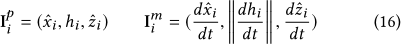
where ( ˆ xi , ˆ zi ) is the horizontally-normalized vector around the character root, and hi the desired vertical height, and I m i is computed by their temporal finite difference. To process the horizontal control vectors, we also apply the same gradient-based Gaussian filtering as for the computation of the root trajectory in Eq. (14):

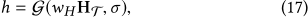
where h is the output height, HT is the original height curve, σ is the standard deviation in Eq. (14), and wH is a weighting given by

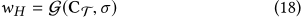
where CT is a block function representing the contact between the hand and the ball, which is obtained by the method described in Section A.2. This setting allows continuous control of the character between different actions as well as switching between offense and defense during runtime.
A.2 Extracting Ball Movements
The position and velocity of the ball is extracted from the motion capture data. However, there are numerous clips where the ball movement leaves the view of the optical motion capture, or when performing regular locomotion and not interacting with the ball, in which case the ball data is either missing or invalid. In such case, we clamp or project the ball to a position on a capsule surface around the character. More specifically, the ball coordinates within a radius of r = 2.5 around the character root are learned as:

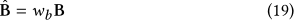
where B are the parameters of the ball, including its position, velocity, upward vector and forward vector of the ball in the root space, and wb is a weighting computed by wb = 1.0 - ∥bp ∥/r where bp is the horizontal position of the ball in the root space. During runtime, computing the actual ball parameters can be done by dividing ˆB by the predicted wb . This transforms the features within a reasonable distribution around the character and helps the network to better learn the ball movement. We wish the network to only learn movements of the ball in which range the character can actually interact with it.
A.3 Detecting Contact Labels
The required contact labels are automatically obtained by evaluating a primary condition for distance and secondary condition for velocity as denoted in Eq. (20). First, we perform collision checks within a specified distance threshold around the character bone. If this holds true, we check another threshold for the maximum velocity difference of the two contacting colliders to filter wrongly extracted and sliding contacts. This can be denoted as

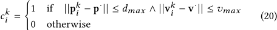
where p k i , p · and v k i , v · are the position and velocity of bone k at frame i and those of another collider object (·) and dmax , vmax are threshold parameters (dmax adjusted according to the collider objects and vmax = 1).